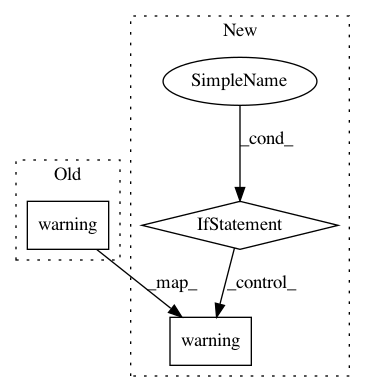

53d95f45b61f0bd255f9c1dcae94aebd73166f0d,server/bert_serving/server/__init__.py,BertServer,_run,#BertServer#,82
Before Change
elif 0 < num_avail_gpu < self.num_worker:
self.logger.warning("only %d out of %d GPU(s) is available/free, but "-num_worker=%d"" %
(num_avail_gpu, num_all_gpu, self.num_worker))
self.logger.warning("multiple workers will be allocated to one GPU, "
"may not scale well and may raise out-of-memory")
run_on_gpu = True
else:
self.logger.warning("no GPU available, fall back to CPU")
After Change
elif 0 < num_avail_gpu < self.num_worker:
self.logger.warning("only %d out of %d GPU(s) is available/free, but "-num_worker=%d"" %
(num_avail_gpu, num_all_gpu, self.num_worker))
if not self.args.device_map:
self.logger.warning("multiple workers will be allocated to one GPU, "
"may not scale well and may raise out-of-memory")
else:
self.logger.warning("workers will be allocated based on "-device_map=%s", "
"may not scale well and may raise out-of-memory" % self.args.device_map)
run_on_gpu = True
else:
self.logger.warning("no GPU available, fall back to CPU")
In pattern: SUPERPATTERN
Frequency: 4
Non-data size: 3
Instances
Project Name: hanxiao/bert-as-service
Commit Name: 53d95f45b61f0bd255f9c1dcae94aebd73166f0d
Time: 2018-12-16
Author: hanhxiao@tencent.com
File Name: server/bert_serving/server/__init__.py
Class Name: BertServer
Method Name: _run
Project Name: ray-project/ray
Commit Name: f68922d0434ae3368a961c6eb520d5c92074bbba
Time: 2021-01-07
Author: amogkam@users.noreply.github.com
File Name: python/ray/tune/session.py
Class Name:
Method Name: get_session
Project Name: hanxiao/bert-as-service
Commit Name: b61833671493bb9fd2acfe48c5a30aaaafd4b571
Time: 2018-12-16
Author: hanhxiao@tencent.com
File Name: server/bert_serving/server/__init__.py
Class Name: BertServer
Method Name: _run